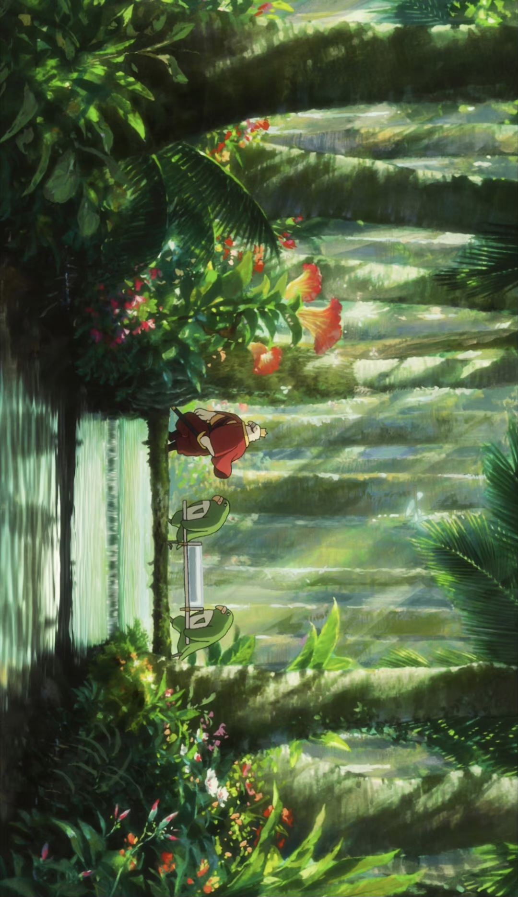
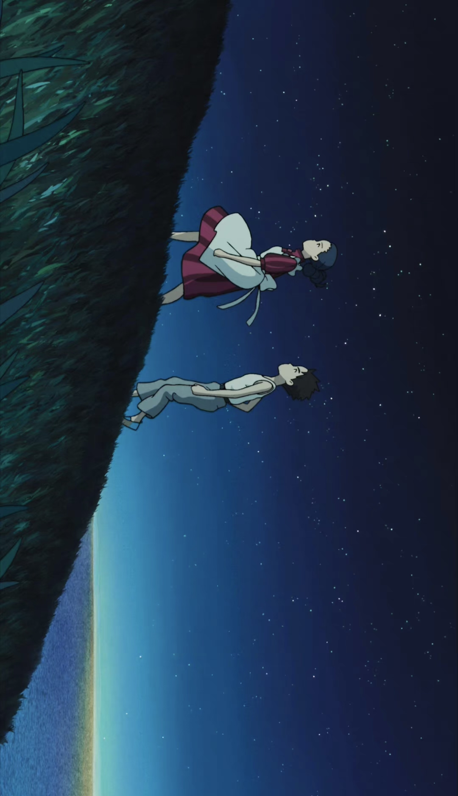
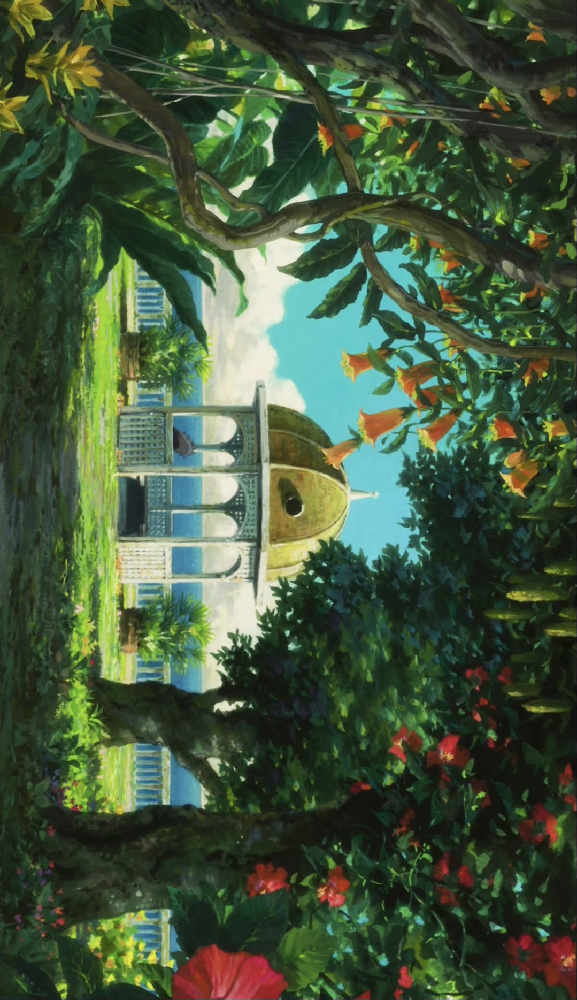
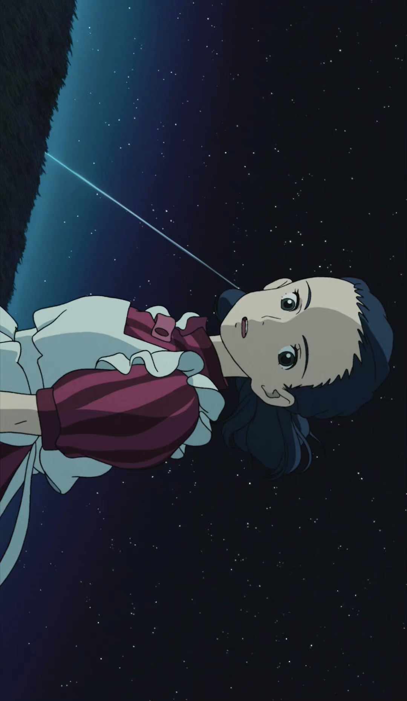
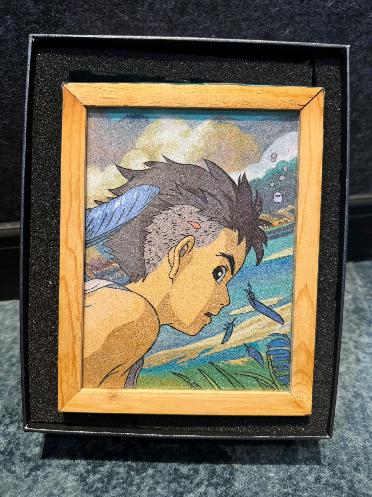
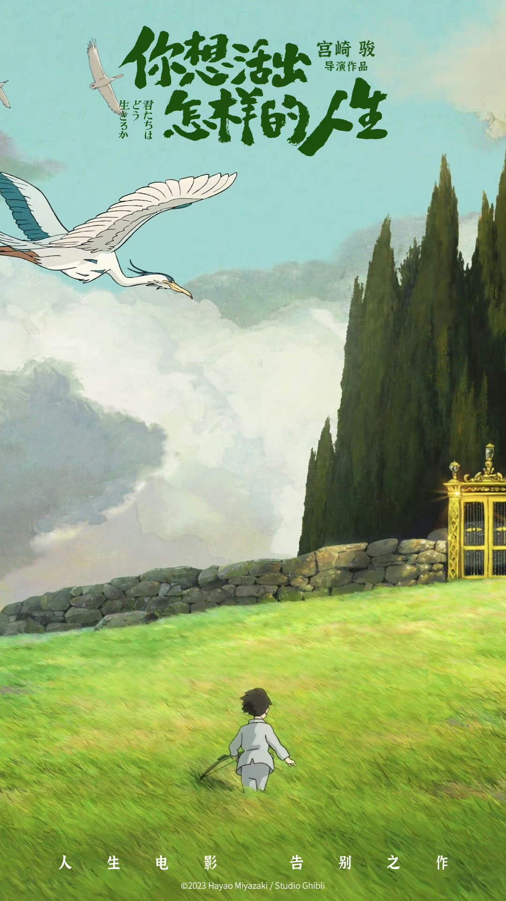

During World War II, Japanese boy Mahito Maki loses his mother in a bombing. His father marries his aunt (mother's sister) and moves to a small town. Though she looks like his mother, Mahito can't accept her.
A talking grey heron tells depressed Mahito it can take him to a fantasy world to see his late mother, but his family stops him repeatedly. After his stepmother Natsuko Maki disappears, the heron takes Mahito into the fantasy world to find her.

There, Mahito meets young Himi (his mother), young Natsuko and man-eating parrots. After adventures, they find the world's creator—Mahito's great-uncle. Years ago, he found a meteorite that grants superpowers to create a timeless fantasy world, where he lived (thought vanished by others). Mahito's mother once vanished as a child, letting her meet him now.

The Great uncle tells Mahito that his own hatred left the world imperfect and near destruction. He asks Mahito to inherit his work and build a perfect new world. Mahito refuses, saying he too holds hatred in his heart and cannot create a world free of it.

The Parakeet King steps forward, declaring he can save the world without them. However, his takeover causes the fantasy world to collapse completely. Everyone flees the world. Mahito’s mother Himi returns to the past. Mahito brings his stepmother Natsuko back to reality and reunites with his father.

Whether the world becomes beautiful or ugly from now on is in your hands.
In life, every choice leaves some regret. Yet people always imagine the path not taken is full of flowers.
I will always live for myself, not to please others.
No matter how cruel the times are, live like a true human being.

The finest things in life are often not the obvious achievements and glories, but the ordinary, genuine moments.
There are many kind-hearted people in the world with good intentions, yet they fail to act out of cowardice. Many are not evil, but their cowardice brings misfortune to themselves and others.
You must truly understand where human nobility lies deep in your soul, not by the world's judgment. Only then can you truly wish to become a noble person.